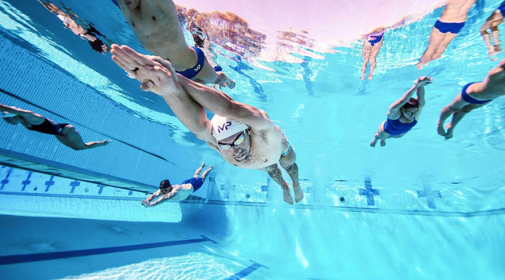
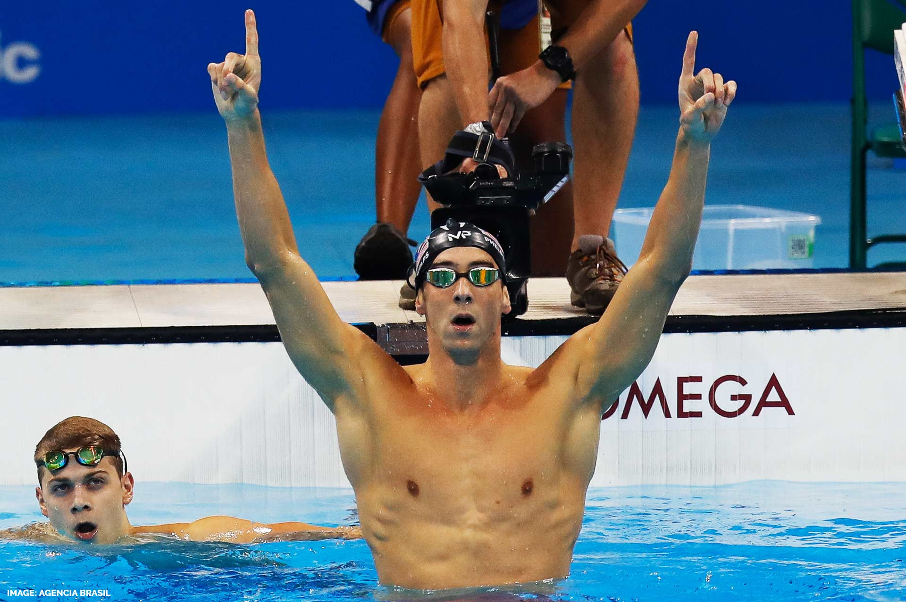

Born June 30, 1985
Is an American retired competitive swimmer and the most successful and most decorated Olympian of all time, with a total of 28 medals. Phelps also holds the all-time records for Olympic gold medals (23), Olympic gold medals in individual events (13), and Olympic medals in individual events (16). When he won eight gold medals at the 2008 Beijing Games, Phelps broke fellow American swimmer Mark Spitz's 1972 record of seven first-place finishes at any single Olympic Games.

Phelps has trained under Bob Bowman since he was 11 years old. Bowman swam for Florida State University from 1983 to 1985. Phelps has said Bowman reminded him of a drill sergeant because of his disciplined and regimented ways. However, Phelps has said, "Training with Bob is the smartest thing I've ever done ... I'm not going to swim for anyone else." After the 2004 Summer Olympics, Bowman was hired as the head coach for the University of Michigan after Jon Urbanchek retired. Phelps joined Bowman at Michigan to train and attended classes, but did not pursue a degree.
 Phelps was a USA Olympic team member in 2000, 2004, 2008, 2012 and 2016, and holds the records for most Olympic gold medals (23), most such medals in individual events (13), and most such medals at a single games (8, in Beijing 2008). A street in his hometown of Baltimore was renamed The Michael Phelps Way in 2004. On April 9, 2009, Phelps was invited to appear before the Maryland House of Delegates and the Maryland Senate, to be honored for his Olympic accomplishments.